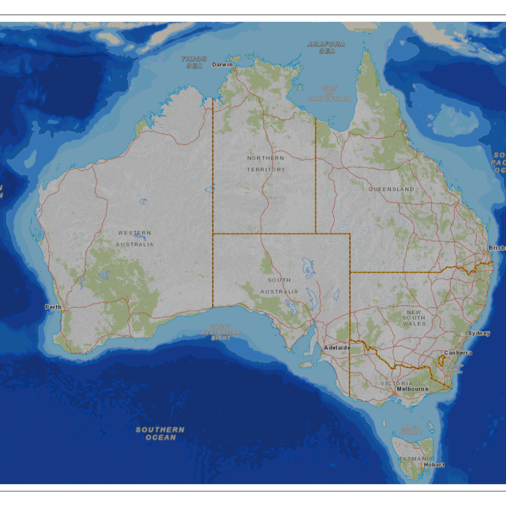
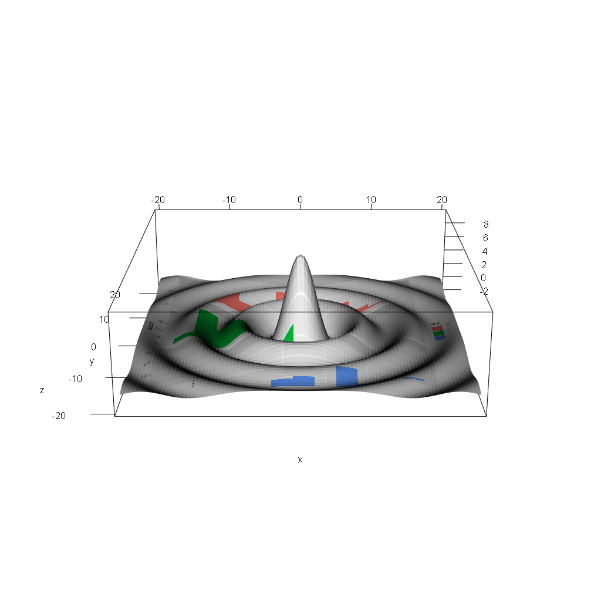

The goal of textures is to generate quad mesh primitives from the compact specification of a regular grid, its dimension and extent. The original motivation was to use texture mapping in graphics to work with images in different coordinate systems and mapped onto arbitrary shapes.
We aim to illustrate texture mapping capability in rgl with core techniques familiar to R users, and with minimal resort to specialist code. When specialist code is required it will be brought out explicitly and explained in a single-step.
Design
Current functions are:
- png_plot3d() - plots a PNG file in a 3D scene
- quad() create a simple mesh3d object with 1 or more quad primitives
- quad_texture() create a mesh3d object with 1 or more quads, and the texture coordinates and file path to a PNG file
- set_scene() a convenience wrapper to rgl scene settings, it makes the scene look “straight-down” and locks pan and tilt so the rgl device like a zoom-in/zoom-out 2D displays
- break_mesh() break the topology of a mesh (so that primitives can be free-floating, not tied to their neighbour’s vertices)
See design vignette.
Installation
Install from github, will require development tools for compiling code.
## install.packages("remotes")
remotes::install_github("hypertidy/textures")Example
A Mercator raster on a single quad. Zoom in and out but no translate or pivot.
Maps an image onto a quad from a PNG file. Run this code and zoom in and out.
library(textures)
## create a temporary file and write an image to it
tfile <- tempfile(fileext = ".png")
png::writePNG(ga_topo$img/255, tfile)
## create a quad *canvas*, a single 4-corner shape floating in 3D
## (and use the PNG file as the material to texture that canvas)
quad0 <- quad_texture(c(1, 1), extent = ga_topo$extent, texture = tfile, )
## plot it in 3D
rgl::open3d()
rgl::plot3d(quad0, specular = "black")
set_scene() ## this sets the plot up to appear like a 2D image
Maps are fun but R is not just about geography.
library(ggplot2)
library(rgl)
## create a plot and save it
g <- ggplot(mpg, aes(displ, fill = drv)) +
geom_histogram(binwidth = 0.5) +
facet_wrap(~drv, ncol = 1)
g
tfile <- tempfile(fileext = ".png")
ggsave(tfile, g)
library(textures)
quad0 <- quad_texture(dimension = c(92, 102), texture = tfile)
ex <- -20
## flip it (fixme later)
quad0$vb[1L, ] <- 1-quad0$vb[1L, ]
quad0$vb[2L, ] <- 1-quad0$vb[2L, ]
quad0$vb[1L,] <- scales::rescale(quad0$vb[1,], to = c(-1, 1) * ex)
quad0$vb[2L,] <- scales::rescale(quad0$vb[2L,], to = c(-1, 1) * ex)
f <- function(x, y) { r <- sqrt(x^2+y^2); 10 * sin(r)/r } ## ?persp
quad0$vb[3L, ] <- f(quad0$vb[1L,], quad0$vb[2L,])
## not working atm ...
#quad0 <- addNormals(quad0) ## we are still in rgl scope, so everything is available
## plot it in 3D
rgl::open3d()
rgl::plot3d(quad0, specular = "black")
rgl::aspect3d(1, 1, .3)
#set_scene(phi = 15, interactive = TRUE)
par3d(windowRect = c(0, 0, 1024, 1024))
Code of Conduct
Please note that the textures project is released with a Contributor Code of Conduct. By contributing to this project, you agree to abide by its terms.